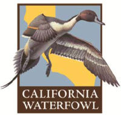

Excellent Customer Service
"We like working with Mechanical Associates because they respond quickly and produce a quality product that we have had very few problems with in the last four years. Their entire staff will go the extra distance to make sure the customer is satisfied."Customer Focus and Reliability
"Mechanical Associates responds in a timely manner while attending to the needs of our customers while producing a high quality product. Their entire staff is dedicated to making the best possible gates on the market."Customizeable Products
 "We appreciate the fact that Mechanical Associates has the ability to customize products for our unique project needs. California Waterfowl has been instrumental in the implementation of Mechanical Associates new products and or designs."Expert control solutions for water flow.
Upgrade from traditional cast-iron or steel gates to durable and modern water flow gates made of marine grade aluminum and stainless steel.- Corrosion-resistant, innovatively designed, quality fabricated mechanical gates
- Durable, low maintenance, cost-effective alternatives to steel or cast iron gates
- An extensiveproduct range made in the USAat highly competitive prices
- Lightweight yet durable materials make them easy to install and maintain
- Innovative design and quality fabrication prevents malfunction and leaks
- Quality engineering design ensures less damage due to wear and tear
- Long-term savings due to lower repair costs
- FREE consultation and technological expertise for installation and repair
Innovative products contribute to sustainable progress.
Complementing a standard product range that includes Canal Gates, Slide Gates, Flap Gates and a range of specialty products and accessories, Mechanical Associates also undertakes the manufacture of customized water flow control gates according to the special requirements of clients and projects.Mechanical Associates was formed with a vision to conserve and control one of our most precious resources, water by ensuring safe and efficient distribution to support sustainable agricultural and industrial progress.
The company is committed to consistently innovate and continuously improve upon the quality standards, engineering and fabrication prowess of its manufacturing unit in which is strategically located in San Joaquin Valley, in the heart of the most agriculturally productive regions in the world.
A proven track record and a diversified product range.
Depending on the nature of the projects and its requirements, Mechanical Associates possesses the necessary expertise, qualified personnel, manufacturing capabilities and experience to produce specialty products. Some of the typical water flow applications that the company’s product range caters to include:- Irrigation and Flood Control Districts
- Municipal Water and Waste Water Treatment Plants
- Water Storage
- Industrial Waste Water
- Food Processing / Ag Waster Water Applications
- Estuaries
Why Mechanical Associates is considered a leading authority in water control management?
Over 20 years of experience manufacturing canal gates, slide gates and flap gates.Experts in municipal and industrial wastewater, agricultural irrigation, water supply and flood water control.
Mechanical Associates has been providing quality products and solutions for water control and management to public utilities, municipalities, the farming community and industrial organizations since 1993.
As a manufacturer of corrosion resistant water flow control gates, Mechanical Associates has an established track record of catering to the agricultural, irrigation, industrial and municipal requirements for controlling and regulating the flow of water. The company manufactures precision fabricated and innovatively designed mechanical gates that fulfill a variety of water flow control needs.